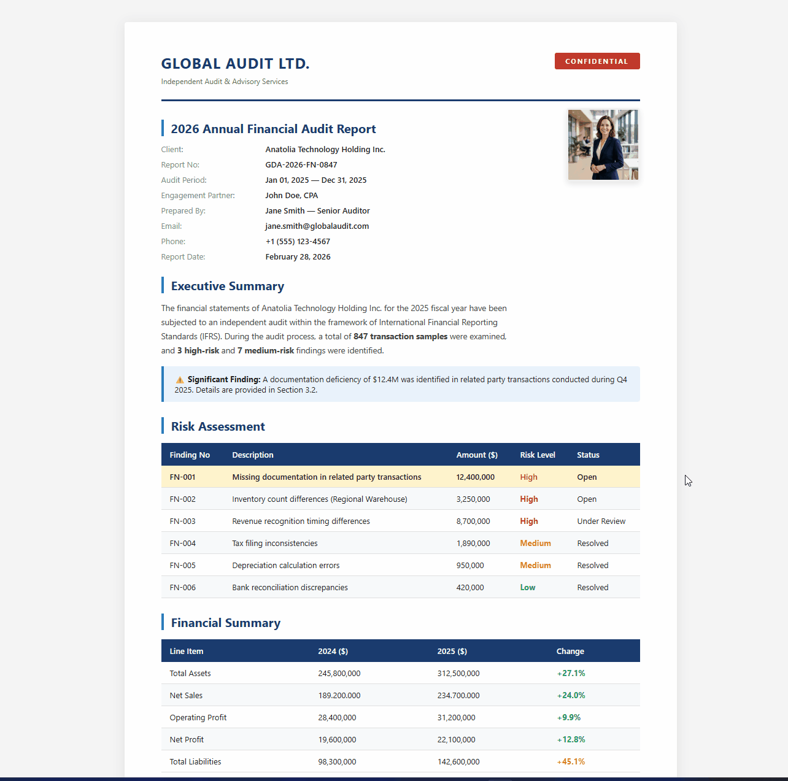

IT profesyonelleri için tasarlanmış, ultra hızlı ekran yakalama ve OCR aracı. %100 çevrimdışı. Verileriniz bilgisayarınızdan asla ayrılmaz.

Tanıma işlemi gömülü Tesseract ile yerel olarak gerçekleşir. Bulut yüklemesi, API bağımlılığı ve sıfır veri sızıntısı.
Optimize edilmiş Python/Qt mimarisi. Saniyeler içinde açılır. Minimal RAM ayak izi, şişme yapmaz.
Akıllı bulanıklaştırma, mozaik, otomatik artan damgalar ve sabitleme araçları ile dokümantasyonunuzu hızlandırın.
| Özellik | Community Edition | Audit Edition (Kurumsal) |
|---|---|---|
| Yakalama ve Düzenleme Araçları | ||
| Sınırsız Yerel OCR | ||
| MSI ve Sessiz Kurulum | ||
| BT Politikaları ve Kısıtlamalar | ||
| Kaynak Kod Karartma | ||
| Öncelikli Destek |
Kurumsal talepler ve Audit Edition lisansları için bizimle iletişime geçin.
İletişim: mehmet@nevresoglu.net